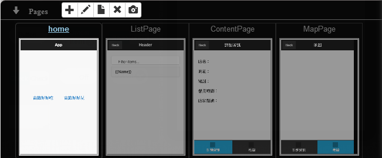

You must have used some websites or apps that introduce gourmet food or tourist attractions of various places, or the very popular bicycle information, bus information and others. Information about transportation and other aspects of life can also be obtained on various platforms. Perhaps you are feeling curious and cannot help but wonder where the information comes from. In fact, many of the government offices' websites provide relevant public data for people to use. EZoApp also provides a feature that allows people to link to the JSON files containing governmental public data, from which they can easily obtain data and create related apps.
However, here is a small reminder-- because we are working on computers, and browsers on computers have a more strict security mechanism about obtaining data from external websites, we might encounter problems if we attempt to access the data through browsers directly. Therefore, we will use the Chrome browser, with a certain security feature turned off, in order to conduct tests in the following tutorial.
Link of example:
Integrating JavaScript in your app - linking open data

As expected, you need to have files containing open data if you are to link to them. Here, we will use the open data platform of Kaohsiung City Government as our example. You can certainly use other open data platforms as well. After entering the open data platform, we will choose "Kaohsiung Travel Network – Dining Information" as our data source.
Link：
Kaohsiung City Government Open Data
If we want to conduct tests on computers, we must turn off certain security features in the browsers. This is because of the default security settings in browsers on computers. We will not have the same security issue on mobile devices. Thus, we will turn off certain settings in the browsers first.
On top of the Chrome program icon, click the right mouse button (we will use Chrome as our example here) and select "Properties"; go to "Shortcut" tab and find the "Target" field. After the filename "Chrome.exe", add the following texts "
--args --disable-web-security". Click "OK" to close the Properties window. We are now ready to conduct our tests.

In this example, we will make four new pages. The first page is the entry page pointing to different information (dining and other travel information); the second page displays the list of stores or tourist attractions acquired through the linking; the third page is the detailed information after clicking an item in the list; and the fourth page is the map.
Copy-and-paste the program code into each corresponding page.
Entry page：
<div id="home" data-role="page">
<div data-role="header" data-position="fixed" data-theme="b">
<h3>App</h3>
</div>
<div role="main" class="ui-content">
<img src="img src">
<div class="ui-grid-a" style="height:115px; margin:20px auto; width:90%;" id="home_btn">
<div class="ui-block-a" style="height:100%; text-align:center;">
<a href="#ListPage" data-transition="slide" id="a1">
<img src="icon">
<h4>good eat</h4>
</a>
</div>
<div class="ui-block-b" style="height:100%; text-align:center;">
<a href="#ListPage" data-transition="slide" id="a2">
<img src="icon">
<h4>good fun</h4>
</a>
</div>
</div>
</div>
</div>
List page：
<div id="ListPage" data-role="page">
<div data-role="header" data-position="fixed" data-theme="b">
<h3 id="title">Header</h3>
<a class="ui-btn ui-btn-left" href="#home" data-transition="slide" data-direction="reverse">Back</a>
</div>
<div class="ui-content">
<ul id="gk-219CcdN" data-role="listview" data-inset="true" is="json-listview" service data-filter="true">
<li>
<a href="#ContentPage" data-transition="slide" s1="{{Name}}" s2="{{Add}}" s3="{{Tel}}" s4="{{Opentime}}" s5="{{Description}}">{{Name}}</a>
</li>
</ul>
</div>
</div>
Detail Page：
<div id="ContentPage" data-role="page">
<div data-role="header" data-position="fixed" data-theme="b">
<h3>Detail</h3>
<a class="ui-btn ui-btn-left" href="#ListPage" data-transition="slide" data-direction="reverse">Back</a>
</div>
<div class="ui-content">
<h4>Name：<span class="d1"></span></h4>
<h4>地址：<span class="d2"></span></h4>
<h4>Phone：<span class="d3"></span></h4>
<h4>Time：<span class="d4"></span></h4>
<h4>Desc：<br><span class="d5"></span></h4>
</div>
<div data-position="fixed" data-role="footer" data-theme="b">
<div data-role="navbar">
<ul>
<li>
<a data-icon="bars" class="ui-btn-active ui-state-persist">Detail</a>
</li>
<li id="btn2">
<a data-icon="location" href="#MapPage">地图</a>
</li>
</ul>
</div>
</div>
</div>
Map Page：
<div id="MapPage" data-role="page">
<div data-role="header" data-position="fixed" data-theme="b">
<h3>map</h3>
<a class="ui-btn ui-btn-left" href="#ListPage" data-transition="slide" data-direction="reverse">Back</a>
</div>
<div class="ui-content">
<div id="map1" is="gmap" style="width:310px;height:450px; zoom="16" address="Qianzhen, TW"></div>
</div>
<div data-position="fixed" data-role="footer" data-theme="b">
<div data-role="navbar" id="nav_bar">
<ul>
<li>
<a data-icon="bars" href="#ContentPage">Detail</a>
</li>
<li>
<a data-icon="location" class="ui-btn-active ui-state-persist">map</a>
</li>
</ul>
</div>
</div>
</div>
The pages look roughly like those shown below:

Next, we will write the JavaScript file. This example uses a simpler method by just writing the information directly into the tag.
var mapAddress;
$(document).on('pageinit', function () {
$('#home_btn a').on('click', function (e) {
var headerTitle = $(this).find('h4').text();
$('#title').text(headerTitle);
});
$('#a1').on('click', function (e) {
listContent("http://data.kaohsiung.gov.tw/Opendata/DownLoad.aspx?Type=2&CaseNo1=AV&CaseNo2=2&FileType=1&Lang=C");
});
$('#a2').on('click', function (e) {
listContent("http://data.kaohsiung.gov.tw/Opendata/DownLoad.aspx?Type=2&CaseNo1=AV&CaseNo2=1&FileType=1&Lang=C");
});
function listContent(service) {
var url = service;
if (url) {
$.getJSON(url).complete(function (data) {
$("#gk-219CcdN").gk("model", $.parseJSON(data.responseText));
$('#gk-219CcdN a').on('click', function (e) {
var g1 = $(this).attr('s1');
var g2 = $(this).attr('s2');
var g3 = $(this).attr('s3');
var g4 = $(this).attr('s4');
var g5 = $(this).attr('s5');
$('.d1').text(g1);
$('.d2').text(g2);
$('.d3').text(g3);
$('.d4').text(g4);
$('.d5').text(g5);
mapAddress = g2;
});
});
}
}
});
$(document).on('pageshow', '#MapPage', function () {
$('#map1').gk('address', mapAddress);
});
After the code is written, it is ready to link to the open data, and a simple information inquiry platform is created!
Link of example:
Integrating JavaScript in your app - linking open data